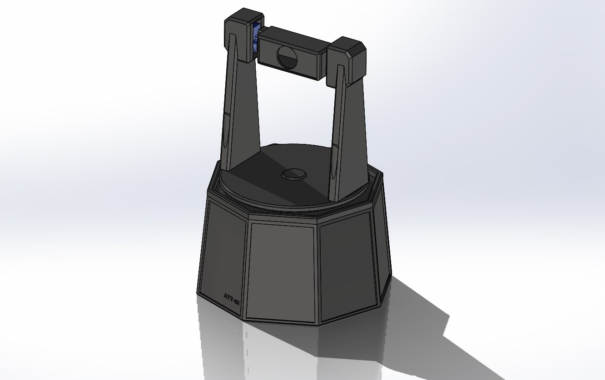
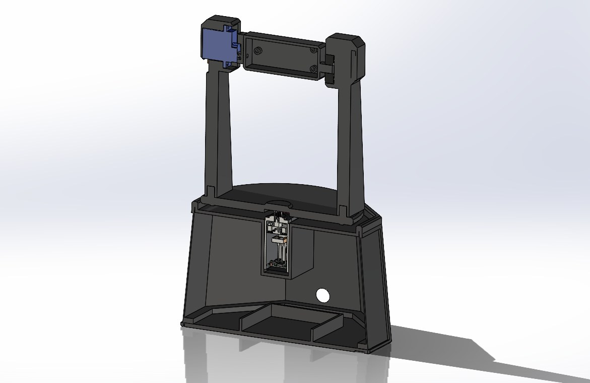
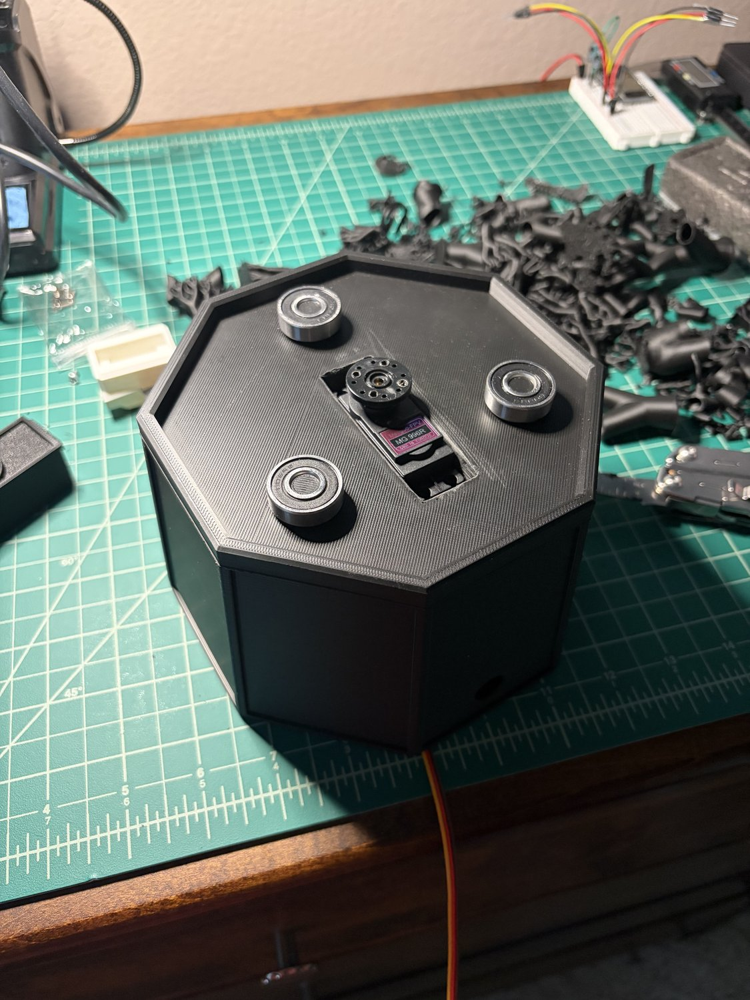
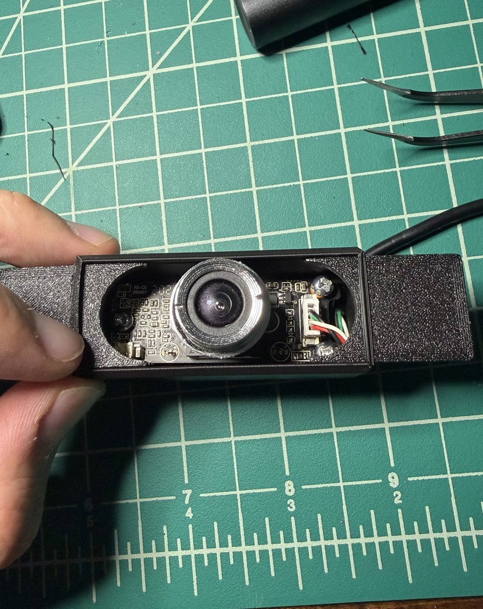
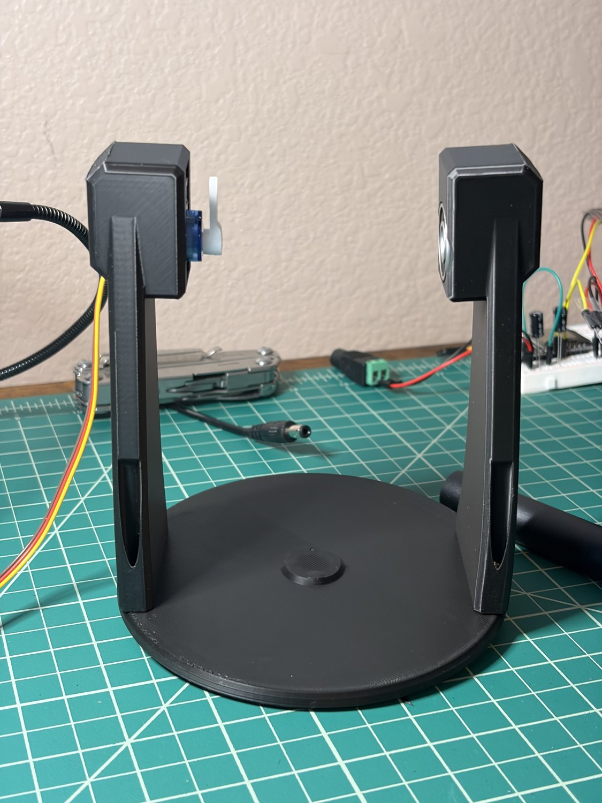
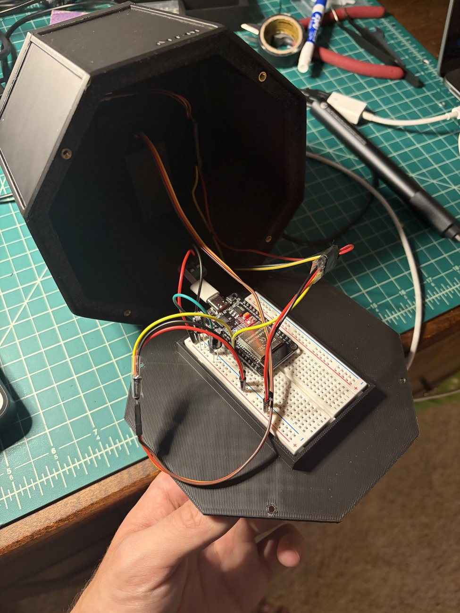
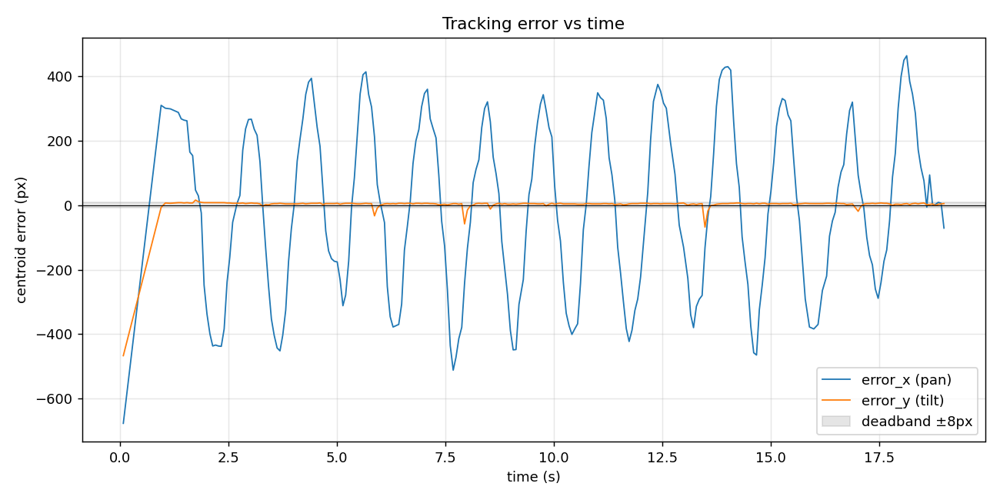
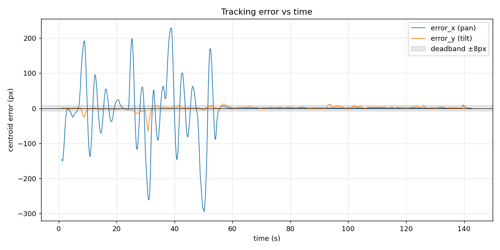
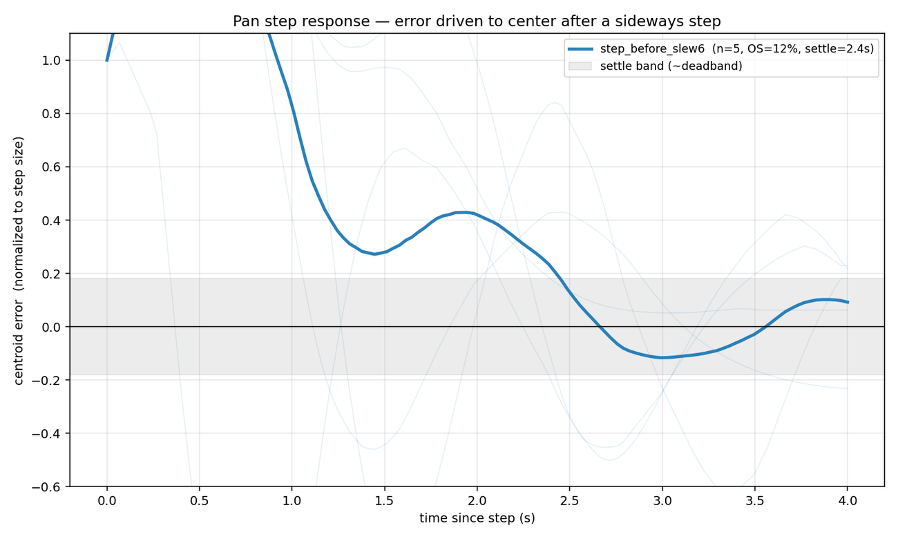
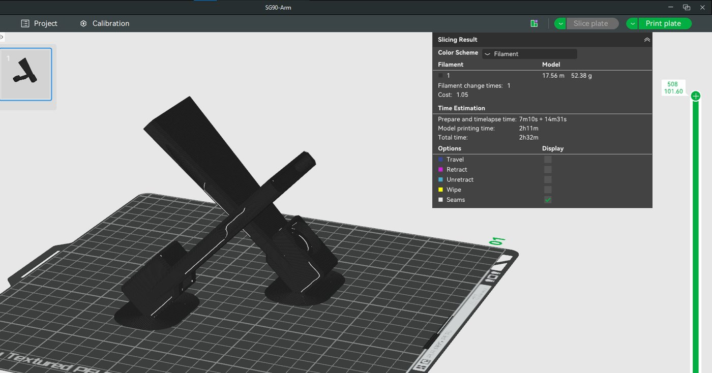

A vision-guided pan-tilt platform that detects a person, holds lock, and keeps the target centered in real time.

ATT-01 is a self-contained pan-tilt platform that keeps a moving target centered in frame. A laptop detects a person with a YOLOv8n neural network, holds a persistent lock on that specific subject with ByteTrack, and estimates the target's motion with a Kalman filter. A per-axis PID loop turns the tracking error into servo-angle commands, which stream over Wi-Fi to an ESP32 that drives the pan and tilt servos. What separates it from a typical hobby tracker is that it was tuned and characterized like a real control system, with every design decision backed by logged data.
I want to work on vision-guided control systems in defense and aerospace. The interest started with photography and a curiosity about how stabilized camera gimbals hold a subject locked in frame. ATT-01 is my hands-on route into that problem: the same detection, estimation, and closed-loop control that keep a gimbal locked on its subject.
The aim was a project that shows real systems-engineering work, not just a quick demo. I set out to detect and follow a specific person in real time and hold lock even when they stop moving; to close a genuine feedback loop from camera to servo and tune it with engineering rigor instead of trial and error; to instrument the system so every decision could be backed by measured data; and to integrate the full stack, from optics and vision through estimation, control, firmware, and a 3D-printed mechanical assembly, into one working platform.
The platform splits the work between a host laptop, which handles perception and control, and an ESP32, which handles actuation. The two talk over Wi-Fi. Keeping the heavy vision and control math on the laptop let me iterate quickly while the microcontroller stayed responsible for one job: driving the servos.
USB webcam → YOLOv8n detection → ByteTrack ID → centroid → Kalman filter → per-axis PID → UDP over Wi-Fi → ESP32 → 50 Hz PWM → MG996R (pan) + SG90 (tilt)


The pan-tilt assembly is a custom 3D-printed bracket. The pan axis uses an MG996R servo to swing the whole camera mass; the tilt axis uses a lighter SG90. Because the two axes are physically different plants with different inertia, I treated and tuned them separately rather than forcing one set of gains on both. The full paid bill of materials came to about $45.
Instead of reacting to motion, the platform detects a designated target. YOLOv8n classifies a person in each frame, and ByteTrack assigns a persistent ID so the system keeps following the same subject through clutter, a second mover, and brief occlusion, and does not lose them when they stand still. After a sustained loss, it reacquires on its own.

A constant-velocity Kalman filter fuses a motion model with the noisy detection. That rejects bounding-box jitter and lets the platform coast through short detection dropouts. An independent PID per axis turns the filtered pixel error into incremental angle commands. The loop carries several guards I added during tuning: a slew-rate limit so no command can slam a servo into its stop, derivative-kick protection on target acquisition, and a deadband sized just above one command step so the platform locks cleanly instead of dithering.


Commands travel over UDP for low-latency, fire-and-forget delivery. The ESP32 firmware, written in C++ on the Arduino framework, receives the angle targets and drives both servos by PWM. The servos run from a dedicated 5 V / 3 A supply sized to the MG996R stall current, sharing a common ground with the ESP32 (never its 3.3 V pin), with flyback diodes and decoupling capacitors for power integrity.
The most instructive part of the project was closing the loop. Every piece passed its bench test in open loop, but the moment the camera was bolted on and started reacting to its own motion, a sequence of control failures showed up that an open-loop test simply cannot reveal. I found each one in logged data, traced it to a root cause, fixed it, and verified the fix.
One humbling detail: the tilt servo was unplugged for the entire tuning history, so every "tilt is stable" result had been an artifact of a disconnected actuator. Once connected, it showed the same inverted-sign fault and was corrected the same way. The throughline across all of it was to trust the logged data over my own assumptions and to look upstream of the obvious suspect before reaching for a more complex fix.
The tuned loop holds lock on nearly every frame, settles cleanly when the subject stops, and has a measured step response. Here is the platform tracking in real time:
Demo: the turret detecting and tracking a target in real time (turn sound on).
The control story is clearest in three figures: an uncontrolled oscillation before tuning, a stable lock after, and a step response that characterizes the tuned loop.



One result is worth stating plainly: the remaining overshoot does not respond to further gain or filter tuning, because the loop is now delay-limited. Two controlled experiments, one varying the derivative gain and one varying the Kalman smoothing, left it essentially unchanged. That is a characterization result, not a shortcoming, and it points to the next upgrade: lower latency or a predictor.

The case study covers the architecture, the control design, all six closed-loop failures and fixes, and the measured results, with every figure reproduced from logged run data.